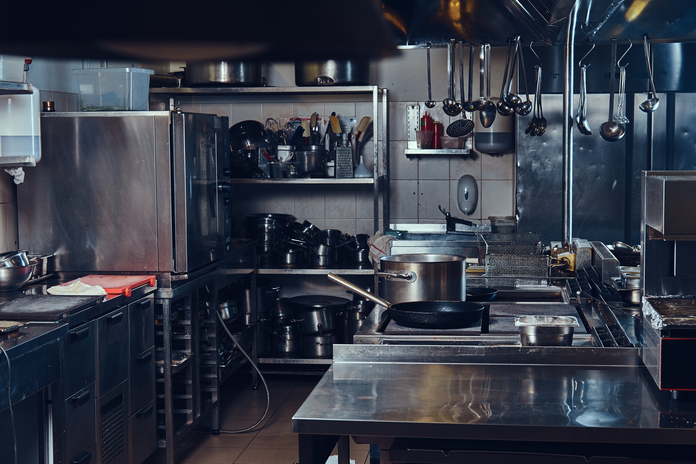

Dă click pe echipamentele din imaginea de mai jos pentru a descoperi rapid categoriile noastre de top.

Vă mulțumim că ne vizitați site-ul.
Promoții și oferte aparatură bucătărie
Pachet "Start-up Horeca"
Pentru antreprenorii care deschid o nouă locație, Magazinul Culinaro oferă un discount de
5% 10% la achiziționarea de dotări complete pentru restaurante.
Oferta include consultanță gratuită pentru optimizarea spațiului de lucru și proiectarea fluxului
tehnologic conform normelor DSVSA.
În plus, la comenzi ce depășesc suma de 50.000 RON, beneficiați de transport, montaj și calibrare
gratuită a echipamentelor termice și frigorifice oriunde în țară.
Promoție Echipamente Termice Premium
Achiziționați orice cuptor profesional din gama ChefMaster Pro și beneficiați de un pachet
gratuit de accesorii, esențial pentru un randament maxim în bucătărie:
Un set de 5 tăvi Gastronorm (GN 1/1) din inox alimentar de înaltă
densitate.
Un sistem de dedurizare și filtrare a apei, vital pentru prelungirea duratei de viață a
boilerului.
Detergent profesional pentru funcția de autocurățare (rezervă pentru primele 3 luni de
utilizare).
Un termometru cu sondă de mare precizie pentru monitorizarea temperaturii la mijlocul
preparatului.
Un contract gratuit de mentenanță preventivă valabil în primul an de funcționare.
Săptămâna Cuțitelor Japoneze
Dedicați-vă pasiunii culinare cu instrumente de o precizie desăvârșită. În perioada 15-25 a lunii
curente, toate cuțitele forjate manual beneficiază de o reducere de 20%.
Fiecare cuțit din oțel carbon achiziționat vine însoțit de:
O piatră de ascuțit profesională cu granulație dublă (1000/3000).
Un ghid tipărit detaliat pentru tehnicile corecte de ascuțire și întreținere a lamei.
O sesiune gratuită de ascuțire și recondiționare în service-ul nostru autorizat, valabilă
oricând în primele 12 luni de la achiziție.
Produsele noastre
Vă oferim o multitudine de metode să echipați cu succes o bucătărie completă.
Echipamente Termice
În caz că nu le puteți folosi fiindcă sunteți abia la început și doar vă uitați la ele, puneți
accentul pe u!
Avem echipamente precum:
Cuptoare
Plite și mașini de gătit
Echipamente fast-food și speciale
Echipamente Frigorifice
Soluțiile noastre de răcire includ:
Frigidere și dulapuri frigorifice
Congelatoare și abatatoare
Vitrine de prezentare și mașini de gheață
Aparatura dinamica
Aparatura folosita la prepararea alimentelor
Roboți de bucătărie și mixere planetare
Mașini de tocat, feliatoare și curățătoare de cartofi
Blendere de mare putere și storcătoare
Igienă, Spălare și Ventilație
Igiena este unul dintre cele mai importante aspecte dintr-o bucatarie
Mașini de spălat vase (frontale, cu capotă, spălătoare de pahare)
Hote de perete și de centru (inclusiv filtre și accesorii)
Chiuvete, baterii cu duș și sterilizatoare pentru cuțite
Ustensile și Accesorii
Oferim ustensile profesionale:
Categorii de ustensile:
Cuțite și accesorii de tăiere
Vase de gătit
Ustensile mărunte
Servire, Prezentare și Depozitare
Solutii pentru catering sau pentru o bucatarie mai organizata
Categorii de ustensile:
Veselă și tacâmuri
Articole pentru bufet și catering
Organizare (recipiente Gastronorm, rafturi de depozitare)
Răsfoiți catalogul nostru complet de echipamente Horeca premium direct în pagină, pentru a vedea specificațiile tehnice detaliate:
Recunoaștere Internațională
"În cadrul ediției de anul acesta a Galei Internaționale de Excelență Horeca, am testat sute
de echipamente în condiții de stres extrem. Ustensilele profesionale Culinaro ne-au lăsat pur și simplu fără
cuvinte. Nu am mai întâlnit o asemenea simbioză între ergonomia perfectă și materialele de înaltă
performanță. Lamele cuțitelor lor au o retenție a tăișului absolut fenomenală, iar fiabilitatea
echipamentelor termice este la standarde industriale de top. Culinaro nu doar că echipează o
bucătărie, ci ridică standardul întregii noastre profesii. Este, fără îndoială, alegerea definitivă
pentru orice chef care refuză compromisurile."
-- Anton Ego, Președintele Juriului la Campionatul Mondial de Gastronomie
Tehnologică
Orar
Program de lucru și nivel estimat de aglomerație în showroom-ul Culinaro
Cod
Perioadă
Zi
Interval dimineata
Pauza de masa
Interval seară
Nivel aglomeratie
Zile Lucrătoare
Luni
10-12
12-14
14-20
25%
Marti
9-12
12-14
14-21
65%
Miercuri
9-11
11-13
14-21
40%
Joi
9-11
11-13
14-21
85%
Vineri
9-12
12-14
14-19
95%
Weekend
Sambata
10-12
12-13
13-16
55%
Duminica
10-14
-
inchis
0%
Închis cu ocazia sărbătorilor legale, sau, când ne e mai lene așa.
Atentie!!! in prima zi a lunii facem inventar la stocuri.
Dacă doriți să vă faceți singuri mentenanța utilajelor vă recomandăm următoarele ghiduri simple pe care
sperăm să le urmăriți, să vedeți cât e de ușor să le reparați, să vă dați în final bătuți și să
veniți să apelați la service-ul nostru. Mulțumim!
Pentru a evalua rentabilitatea achiziționării unui echipament premium din magazinul nostru, vă recomandăm să utilizați formula standard pentru calculul rentabilității investiției (Return on Investment):
*Un ROI pozitiv într-un interval scurt de timp confirmă eficiența energetică și productivitatea superioară a utilajelor Culinaro.
{kind=link}